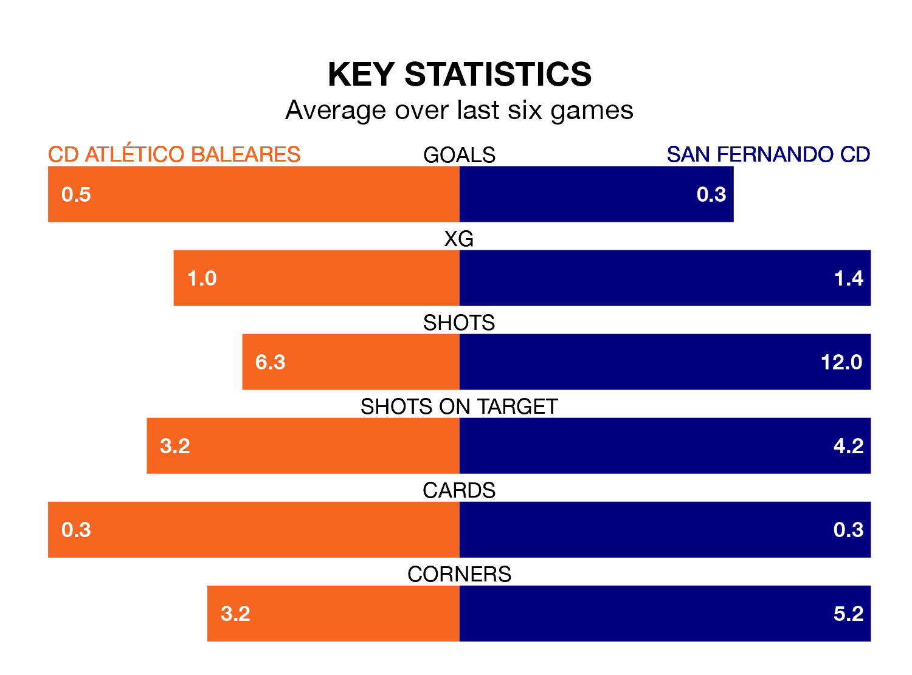

Sunday's early match at Campo de Son Malferit sees two relegation candidates play each other, as 18th-ranked CD Atlético Baleares host 17th-placed San Fernando CD.
Atlético Baleares have picked up 21 points from their first 21 Primera Division RFEF Group 2 games, with five wins and six draws.
That is six points less than San Fernando CD have collected, having won seven and drawn six.
Atlético Baleares are in bad form in Primera Division RFEF Group 2, with one win and five losses from their last six games.
But with no wins and two draws over that period, San Fernando CD's form is even worse – they have taken two points from 18, compared to the hosts' three.
In David Rodríguez Sánchez, Atlético Baleares have one of the league's most on-form strikers so far this season. He has notched seven goals in 18 appearances, to sit sixth in the scoring charts.
The away side's top scorer, with seven goals in 22 games, is Daniel Aquino Pintos.
With 15 goals in 27 games so far this season, Atlético Baleares are the league's third-lowest scorers with 0.6 goals per game. And they are conceding more than average, letting in 45 goals at a rate of 1.7 per game.
San Fernando CD are also below average scorers, with 1.0 goal per game, compared to a league average of 1.1. They have conceded 1.3 goals per game.
In the last three years, Atlético Baleares and San Fernando CD have played each other on three occasions. Atlético Baleares won one of them and they drew the other.
Their last meeting was on December 10, when they played out a 1-1 draw.
Atlético Baleares's last match was on March 10, a 2-0 loss against Córdoba.
San Fernando CD lost 1-0 against Mérida AD last time out, also on Sunday.
Updated: 15:10 (UTC), 15/03/24